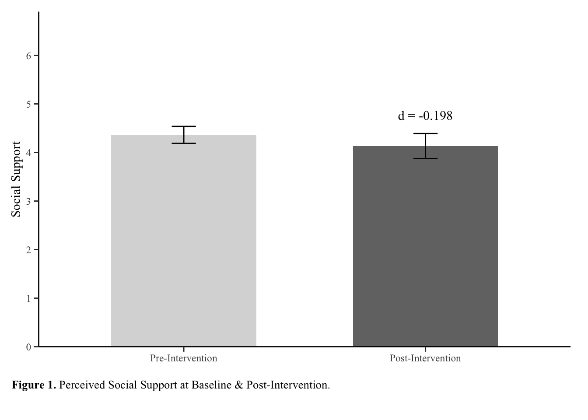
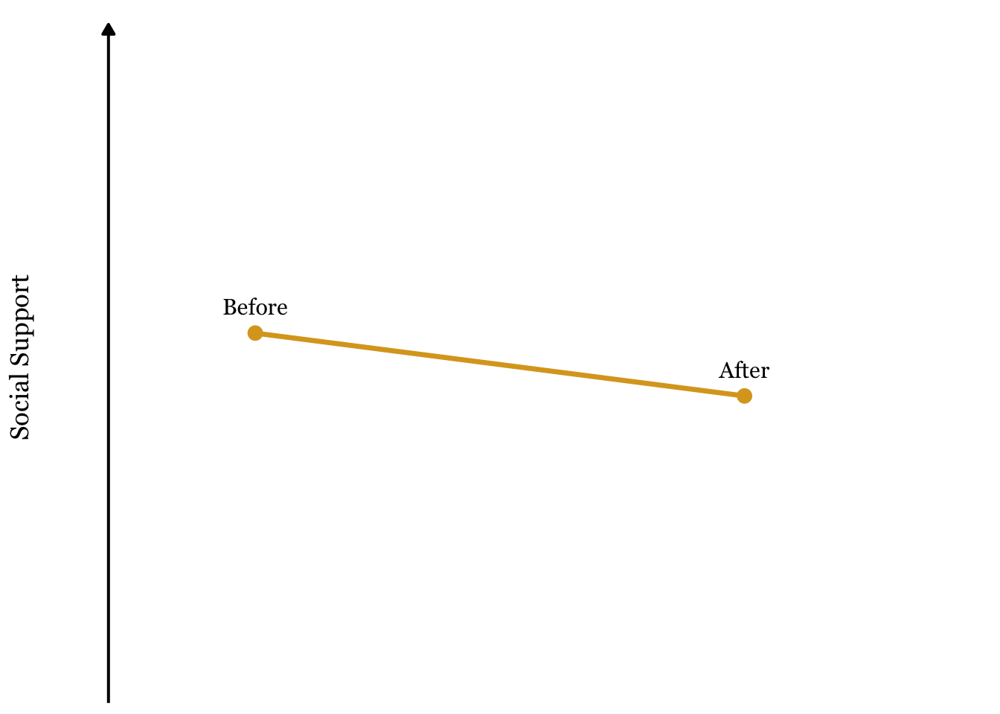
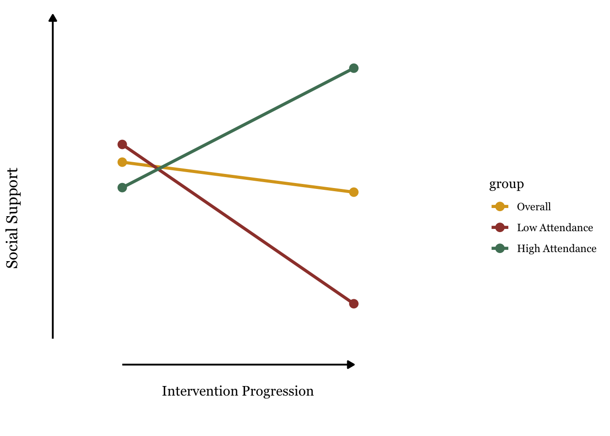

Explaining the Inexplicable: Visualizing Misleading Social Support Data
Data Visualization Assignment - Megan Sutton (251076518)
Story Summary
Social support is a salient predictor of one’s wellbeing. Queer women report high levels of adverse health outcomes, likely owing to the unique intersection of barriers (e.g., homophobia, sexism) and the dearth of inclusive contexts. Evidence suggests group-based exercise programs can substantially increase social support, thereby supporting wellbeing. Thus, researchers developed a group-based exercise intervention for queer women to improve their sense of social support. Researchers hypothesized that, in accordance with existing literature surrounding physical activity interventions and marginalized communities, participants would report an increase in social support.
Surprisingly, following program engagement, participants reported lower levels of social support. This drastically contrasting our hypotheses and existing literature. How could study participation result in lower social supported? Findings were inexplicable until we zoomed out.
Researchers noticed that attendance rates varied, where some participants attended upwards of 90% of sessions, while others attended less than 10%. We hypothesized that low attendance prevented those who did not attend many sessions did not experience the belongingness gain social support we intended as they were not there to experience the group dynamics or form relationships with co-participants. Upon further analysis, high attendance participants who attended more than 50% of sessions reported an increase in social support, while those who attended less than 50% of sessions reported a decrease. This paints a clearer picture and is more aligned with our hypotheses and findings in existing research. Ultimately, this is a valuable lesson; when faced with an unexpected outcome, zoom out to look at the whole story.
Version B - Attendance Matters: Can Group Fitness Classes Help Queer Women Feel More Connected?
Social support is about more than having people around us. It’s about feeling cared for, valued, and supported by others. These connections can play an important role in our overall well-being and quality of life. Queer women, however, often face barriers, such as homophobia and sexism, that limit their ability to feel safe, connected, and supported. These challenges exist alongside well-documented disparities in health outcomes, highlighting the importance of creating spaces where queer women can build meaningful connections.
One promising approach is group-based physical activity. Exercising alongside others who share aspects of our identities can create opportunities for connection, belonging, and mutual support. Research involving other marginalized groups has found encouraging evidence that group-based fitness programs can strengthen perceived social support. But could a program designed specifically for queer women offer similar benefits?
In 2025, a group of researchers at Western University got together to answer this question. This group developed a 6-week exercise program which would be led by other queer women. Through the development of relationships with their peers, this program was specifically designed to foster senses of community and belonging. The goal was to explore whether taking part in a shared, queer-led physical activity program might help participants feel more socially supported. At the end of the study, researchers analyzed the data only to find a surprising result.
Participants felt… Worse?
At first glance, the findings seemed to challenge expectations.
Across all 19 participants, perceived social support was lower after the 6-week program than before it. The overall change reflected a small negative effect.

This was not the improvement researchers had anticipated. How could participating in a group fitness class make participants feel less connected than they had when they started?
But this result didn’t tell the whole story.
Zooming out to see the whole picture
Researchers noticed that participants differed considerably in how often they attended. Some took part in nearly every session, while others attended fewer than half. This got the group thinking; how could the program impact people who didn’t come? Researchers therefore explored whether the pattern of results differed according to attendance. They separated participants into two groups: those who attended at least half of the sessions and those who attended fewer than half.
And just like that - A different pattern emerged.
Participants who attended at least half of the sessions reported higher perceived social support after finishing the program, while participants who attended fewer than half of the sessions reported lower social support.

In other words, the overall declining social support was misleading. It turns out that attendance cannot be ignored, as those who did not participate made the program seem, not only ineffective, but harmful! Looking at the people who attended, the data suggests that group fitness classes may be an effective way to help queer women feel connected, supported, and seen.
What does this mean?
The key takeaway is not simply that offering group exercise will help queer women feel socially supported. What matters is that people show up and participate.
There is still much to be done here; results are preliminary and leave many questions unanswered. However, as queer women often face distinctive social barriers and disparities in health outcomes, inclusive opportunities to connect and be active deserve are a great place to start. Programs designed with and for this population may offer a valuable setting in which to explore how physical activity, shared identity, and social relationships intersect.